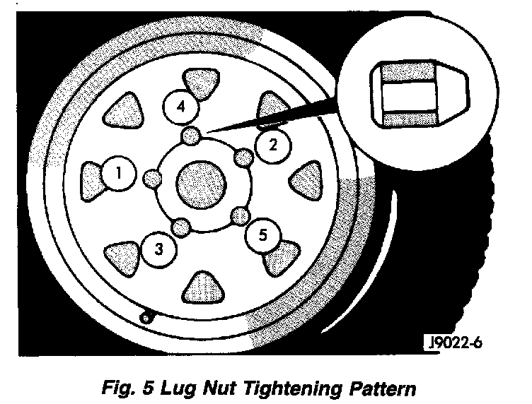

Installation
Fig. 5:

The wheel studs and nuts are designed for specific applications. They must be replaced with equivalent parts. Do not use replacement parts of lesser quality or a substitute design. All aluminum and some steel wheels have wheel stud nuts which feature an enlarged nose. This enlarged nose is necessary to ensure proper retention of the aluminum wheels.
NOTE: Do not use chrome plated lug nuts with chrome plated wheels.
Before installing the wheel, be sure to remove any build up of corrosion on the wheel mounting surfaces. Ensure wheels are installed with good metal-to-metal contact. Improper installation could cause loosening of wheel nuts. This could affect the safety and handling of your vehicle.
To install the wheel, first position it properly on the mounting surface. All wheel nuts should then be tightened just snug. Gradually tighten them in sequence to the proper torque specification. Never use oil or grease on studs or nuts.